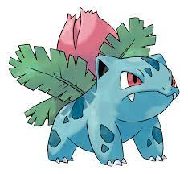

Bulbasaur (Japanese: フシギダネ Fushigidane) is a dual-type Grass/Poison Pokémon introduced in Generation I. It evolves into Ivysaur starting at level 16, which evolves into Venusaur starting at level 32. Along with Charmander and Squirtle, Bulbasaur is one of three starter Pokémon of Kanto available at the beginning of Pokémon Red, Green, Blue, FireRed, and LeafGreen.
Biology
Bulbasaur is a small, quadrupedal Pokémon that has blue-green skin with darker patches. It has red eyes with white pupils, pointed, ear-like structures on top of its head, and a short, blunt snout with a wide mouth. A pair of small, pointed teeth are visible in the upper jaw when its mouth is open. Each of its thick legs ends with three sharp claws. On Bulbasaur's back is a green plant bulb, which is grown from a seed planted there at birth. The bulb also conceals two slender, tentacle-like vines and provides it with energy through photosynthesis as well as from the nutrient-rich seeds contained within. As mentioned in the anime, starter Pokémon are raised by Breeders to be distributed to new Trainers. Having been domesticated from birth, Bulbasaur is regarded as both a rare and well-behaved Pokémon. It is known to be extremely loyal, even after long-term abandonment. Bulbasaur in the anime have demonstrated a nurturing instinct towards younger, weaker Pokémon, one individual even using its vines to pick up a crying Pokémon, gently rocking it back and forth through the air while singing a "Bulba-by." It is found in grasslands and forests throughout the Kanto region. However, due to Bulbasaur's status as starter Pokémon, it is hard to come by in the wild and generally found under the ownership of a Trainer. It has been observed that a Bulbasaur's bulb will flash blue when it is ready to evolve. If it does not want to evolve, it struggles to resist the transformation. Many Bulbasaur gather every year in a hidden garden in Kanto to evolve into Ivysaur in a ceremony led by a Venusaur.
Facts
Origin
a Bulbasaur was seen in Professor Oak's introduction, while another was one of the Pokémon that Oak was giving away.
Name origin
The name Bulbasaur comes from the union of the word bulb (because it has one on it) and "Sauros" (which comes from a dinosaur). The Japanese name, Fushigidane, comes from the union of the words ushigi (??? "mystery") and tane (? "Seed").
Bulbasaur (Japanese: フシギダネ Fushigidane)
Evolutive Line

|
 |

|
|---|---|---|
| Bulbasaur | Ivysaur | Venusaur |